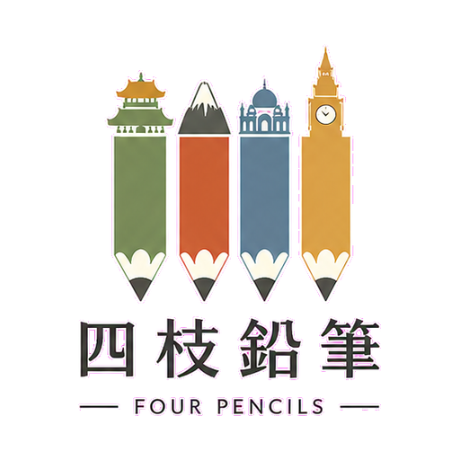
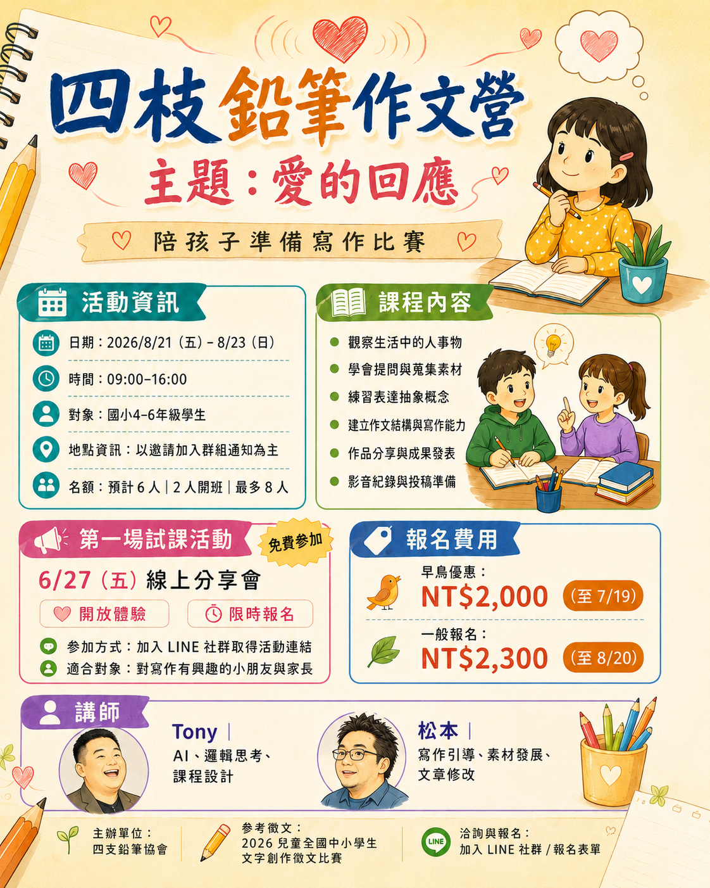
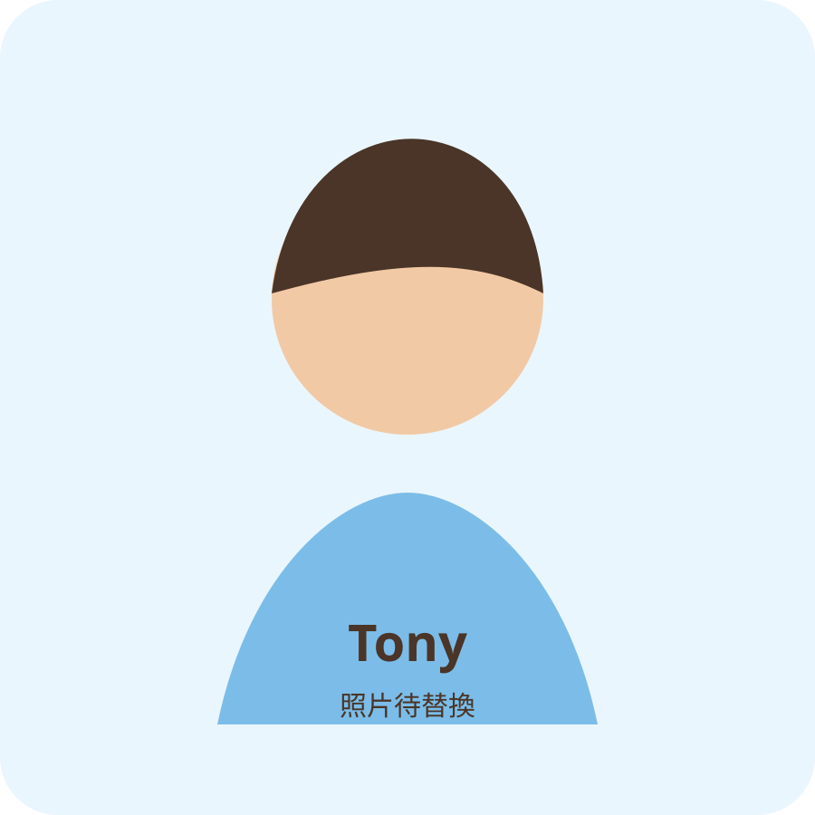
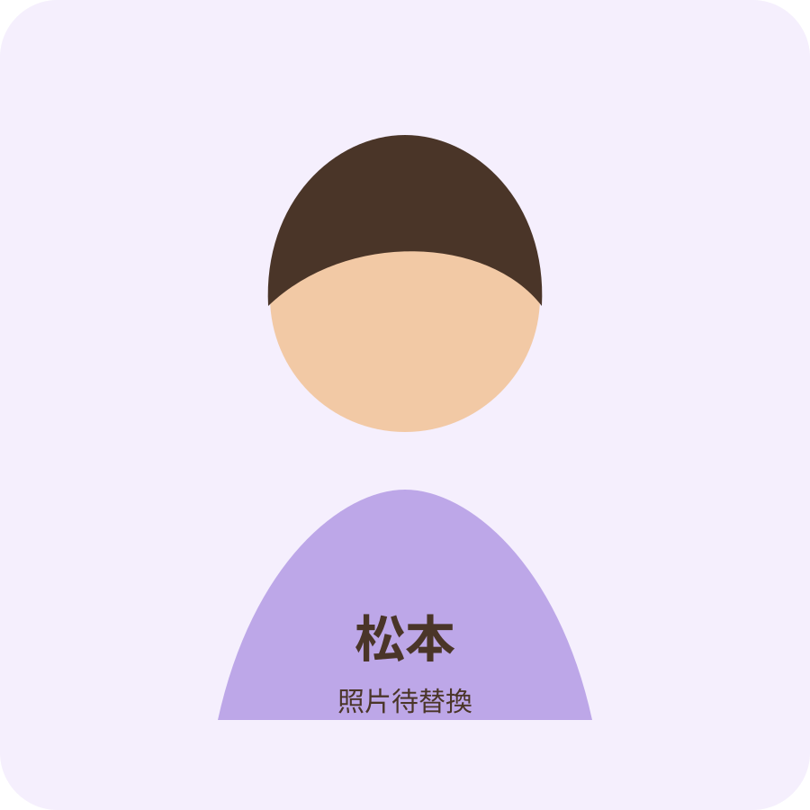

2026 夏季小班寫作營

四枝鉛筆作文營
愛的回應
從觀察、提問到寫作，
陪孩子完成一篇有溫度的作品
孩子有很多想法，卻不知道怎麼開始寫嗎？
我們將透過生活觀察、引導提問、素材整理、文章結構與修改練習，陪伴孩子把感受轉化成清楚、有邏輯又有溫度的文字。
- 2026年8月21日至8月23日
- 每天09:00－16:00
- 國小四至六年級
- 預計6人，2人開班，最多8人
小班陪伴｜作品分享｜計畫投稿寫作比賽

寫作困難
孩子是否也遇到這些寫作困難？
寫了很多內容，卻不知道如何安排段落
能感受到情緒，卻不容易轉化成文字
寫完文章後，不知道如何修改得更完整
寫作不只是把字放在紙上，而是學習觀察、理解、整理與表達。
課程內容
我們如何陪伴孩子寫作？
將抽象感受轉化為具體文字
- 觀察人物、事件、行動與環境
- 分辨事實、感受與自己的解釋
- 從日常生活尋找值得書寫的細節
- 練習提出有深度的問題
- 將生活經驗轉化成寫作素材
建立完整的作文能力
- 找出文章的核心觀點
- 選擇具體事件與細節
- 設計貼合內容的題目
- 安排開頭、發展、轉折與結尾
- 描寫人物、情境、行動、對話與感受
- 修改句子、段落、標點與錯別字
- 完成作品並計畫投稿寫作比賽
主題
主題｜愛的回應
愛不只是對親近的人表達善意，也包括我們如何回應家人的照顧、朋友的鼓勵、陌生人的幫助，以及生活中曾經收到的關懷。
我曾經接受過誰的幫助？
我可以如何回應別人給我的愛？
當別人與我不同時，我可以如何理解他？
寬容是否也需要界線？
如何把收到的善意延續給下一個人？
孩子將從自己的生活經驗出發，找到真正想說的故事，而不是套用制式答案。
學習流程
從看見到修改的六個步驟
- 看見觀察圖片、影片與生活中的細節
- 提問思考人物的選擇、感受與原因
- 連結連結自己的生活經驗與記憶
- 整理建立素材庫與文章架構
- 書寫將想法發展成完整文章
- 修改調整內容、表達、標點與段落
AI僅作為提問、整理與教學輔助，不會代替孩子完成作文。
學習資源
我們使用的學習資源
影音與視覺素材
使用具故事性、情感性與價值思考的影片及圖片，引導孩子觀察、聯想與表達。
寫作教材與方法
結合適合國小中高年級的寫作教材，練習題目分析、素材組織、段落安排與文章修改。
AI與邏輯思考
透過結構化提問、觀點比較與個別化引導，協助孩子整理想法；AI不會代替孩子創作。
講師介紹
課程帶領者

Tony
課程設計｜AI與邏輯思考引導
Tony負責課程架構、邏輯思考及AI教學應用，著重協助孩子從觀察與提問開始，整理想法、比較不同觀點，並將抽象概念轉化為清楚的表達。

松本
寫作引導｜文章結構與修改
松本負責寫作素材發展、文章結構、情感表達與作品修改，陪伴孩子從生活經驗中找到題材，逐步完成具有個人觀點與感受的文章。
活動資訊
活動資訊
- 活動名稱
- 四枝鉛筆作文營
- 活動主題
- 愛的回應
- 日期
- 2026年8月21日至8月23日
- 時間
- 每天09:00－16:00
- 對象
- 國小四至六年級學生
- 預計人數
- 6人
- 最低開班
- 2人
- 最高人數
- 8人
- 報名
- 加入LINE群組後通知後續資訊
- 午餐安排
- 不供餐，可協助統一代訂便當
- 成果安排
- 作品分享、成果發表及後續投稿協助
費用
報名費用
早鳥優惠
NT$2,000
至2026年7月19日
一般報名
NT$2,300
至2026年8月20日
匯款方式、LINE群組邀請、正式活動地點及行前資訊，將於完成報名後通知。
立即填寫報名表報名
準備陪孩子寫出自己的故事了嗎？
填寫報名表後，工作人員將提供LINE群組邀請，並於群組中通知正式活動地點、繳費方式及行前資訊。
https://forms.gle/HjCH9zStH4BdLYuB7
立即填寫報名表常見問題
常見問題
完成報名後，我們會邀請家長加入LINE群組，並於群組中通知正式活動地點及行前資訊。
可以。課程將從觀察、提問與素材整理開始，陪伴孩子逐步建立文章。
不會。AI僅用於教師備課、引導提問、整理想法及示範不同表達方式，作品仍由孩子自行思考、書寫與修改。
課程將以完成作品並計畫投稿寫作比賽為方向，但會依作品完成度、學生意願及家長確認後進行，不保證投稿或得獎。
活動不直接提供餐食，但可協助統一代訂便當，相關費用與方式將另行通知。
2人即可開班，預計招收6人，最多8人，以維持小班陪伴品質。
完成報名表後，工作人員將透過家長留下的聯絡方式提供LINE群組邀請。